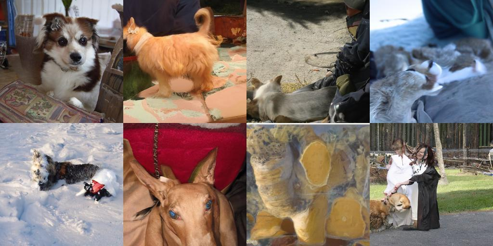
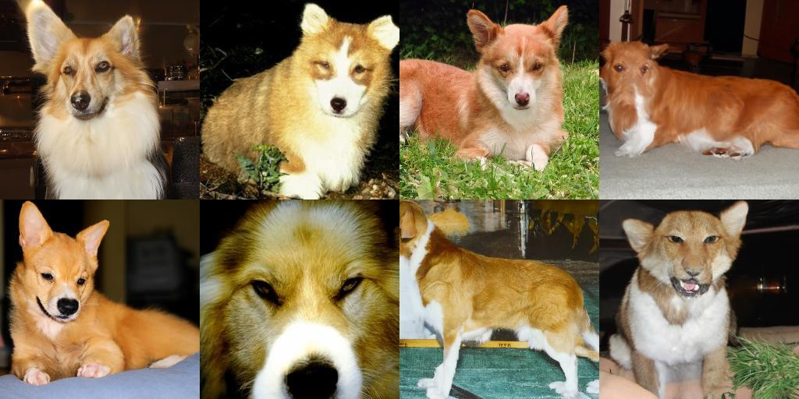
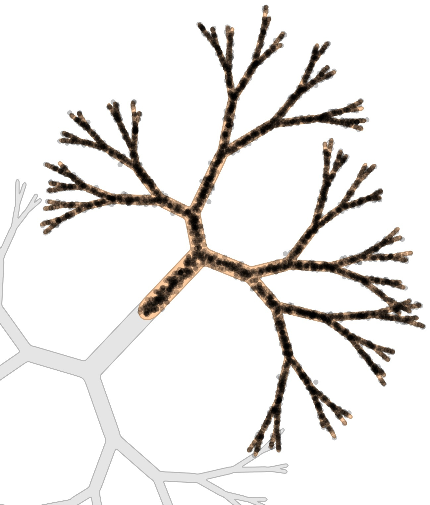
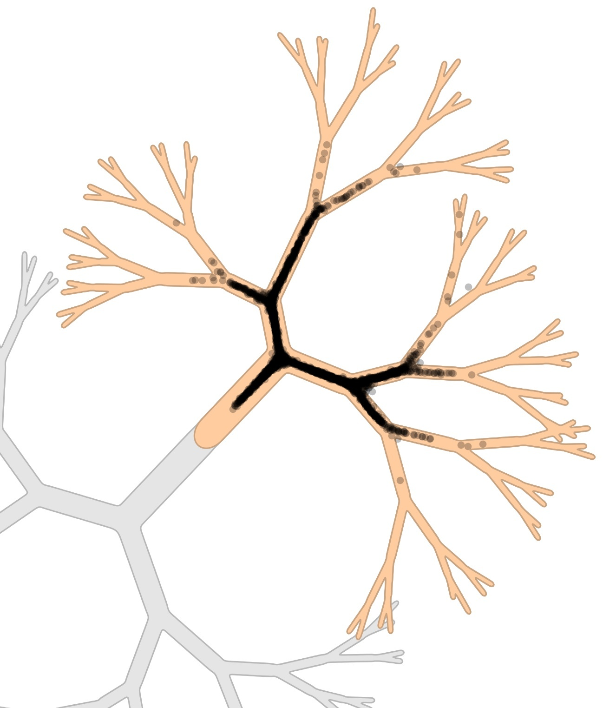
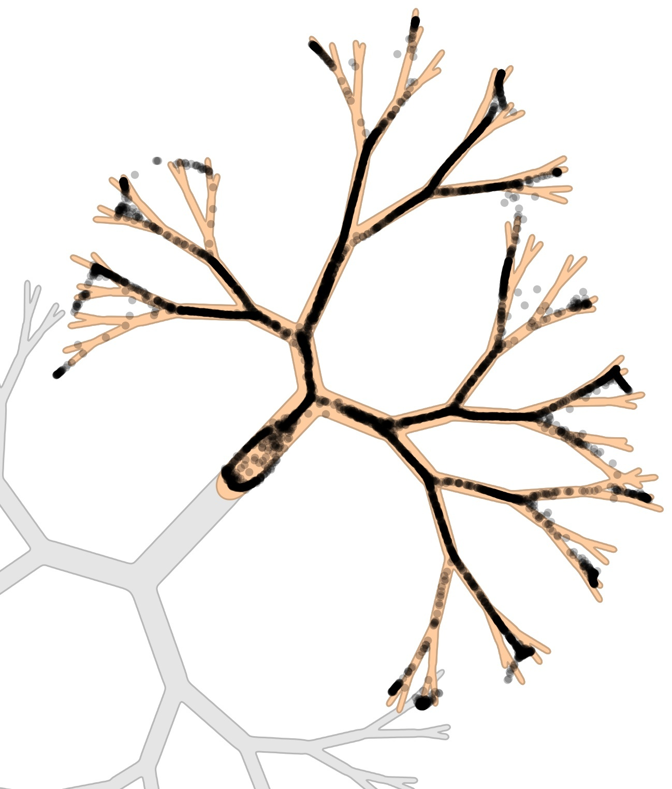
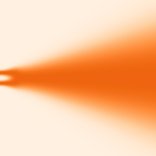
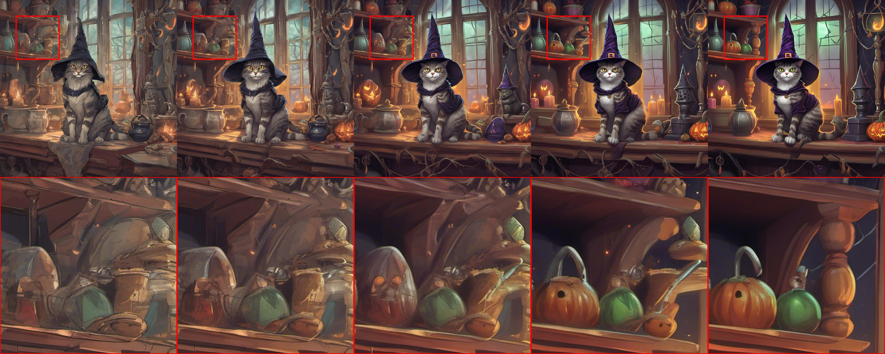

A field guide
Guidance in Diffusion and Flow Models
Every text-to-image tool you've used has a "guidance scale" slider, and almost nobody who drags it knows what it's actually extrapolating between. Guidance is the single most consequential sampling-time trick in modern generative modeling — it's the difference between a diffusion model's raw, honest samples and the sharp, on-prompt, occasionally oversaturated images everyone actually ships. This is the full toolkit: the exact formula (verified against the real papers, reimplemented live in this page), why it works, why it breaks in a specific, predictable way at high strength, and the two recent fixes — autoguidance and limited-interval guidance — that each independently pushed ImageNet FID to a new record in the same few months of 2024.
A diffusion model trained to sample $p(\vx|c)$ — an image given a text prompt, a class label — already does what it's asked. Sample from it honestly and you'll get faithful, diverse, occasionally underwhelming results: the model spreads its probability mass exactly where the data said it should, including on the boring, ambiguous, or barely-on-prompt parts of that distribution. Guidance is the trick that says: don't just sample $p(\vx|c)$ — sample from a sharpened version of it, one that concentrates more mass on the parts of the distribution most clearly associated with the condition. It costs nothing extra to train (in its dominant modern form) and one extra network evaluation per sampling step, and it is directly responsible for the jump in perceived quality between early conditional diffusion models and everything that shipped after 2021.
The story below has four acts, each fixing a specific problem with the one before it — classifier guidance needing an awkward extra network, classifier-free guidance's own well-documented failure mode at high strength, and two independent 2024 papers that each diagnosed a different piece of that failure mode and fixed it without touching the core formula.
1. The core idea: extrapolate toward the condition
Every variant of guidance in this piece is the same three-line recipe, wearing different clothes: take a "good" prediction (the model's best guess conditioned on $c$), take a "worse" reference prediction (one that ignores or is less good at using $c$), and push past the good prediction, away from the worse one, by some weight $w$:
$$ \hat{\ve} = \ve_\text{worse} + (1+w)\big(\ve_\text{good} - \ve_\text{worse}\big) = (1+w)\,\ve_\text{good} - w\,\ve_\text{worse} $$
At $w=0$ this is just the good prediction — plain conditional sampling. As $w$ grows, the sampler is told to move further in the direction "away from what you'd predict without really using the condition, toward what you'd predict with it" than the model itself would naturally go. What changes between the methods below is entirely the answer to one question: what plays the role of $\ve_\text{worse}$?
2. Classifier guidance
Dhariwal & Nichol's "Diffusion Models Beat GANs on Image Synthesis" (OpenAI, NeurIPS 2021, arXiv:2105.05233) answers that question with an explicit classifier. Train $p_\phi(y|x_t,t)$ — a classifier that works directly on noisy images, at every noise level the diffusion model uses — then use its gradient to nudge the sampling process toward images the classifier is confident belong to class $y$:
$$ \hat\ve(x_t) = \ve_\theta(x_t) - \sqrt{1-\bar\alpha_t}\;\nabla_{x_t}\log p_\phi(y\mid x_t) $$
The derivation is a direct consequence of how diffusion scores compose: if $\ve_\theta$ implicitly encodes a score $\nabla_{x_t}\log p_\theta(x_t)$, then $\nabla_{x_t}\log\big(p_\theta(x_t)\,p_\phi(y|x_t)\big) = \nabla_{x_t}\log p_\theta(x_t) + \nabla_{x_t}\log p_\phi(y|x_t)$ — scores of a product distribution just add. The classifier itself reuses the diffusion model's own U-Net downsampling trunk with a CLIP-style attention-pooling head, trained on the same noised-image distribution the diffusion model sees.
This works, and works well — but at a real engineering cost the paper is upfront about: the classifier cannot be an off-the-shelf model, because it needs to make sense of images at every noise level, including ones so noisy a normal classifier has never seen anything like them. That means training an entirely separate network, on the same noise schedule, just to guide the diffusion model.


On ImageNet 256×256, guidance takes a conditional model from FID 10.94 / IS 100.98 unguided to FID 4.59 / IS 186.70 at scale 1.0 — nearly halving FID while nearly doubling Inception Score. Push the scale to 10.0 and FID rises back to 9.11 even as IS keeps climbing to 283.92: exactly the trade-off the next few sections are all about.
3. Classifier-free guidance
Ho & Salimans (Google Research, 2022, arXiv:2207.12598) ask the obvious follow-up question: do you actually need a separate classifier at all? Their answer, now the default in essentially every deployed text-to-image system, is no. Train one model to do both jobs: with some probability $p_\text{uncond}$ (they sweep $\{0.1, 0.2, 0.5\}$; $0.1$–$0.2$ both work well, $0.5$ consistently underperforms), replace the real condition with a null token during training, so the same network learns both $\ve_\theta(x_t,c)$ and $\ve_\theta(x_t,\varnothing)$. At sampling time, extrapolate between them:
$$ \tilde\ve_\theta(x_t,c) = (1+w)\,\ve_\theta(x_t,c) - w\,\ve_\theta(x_t,\varnothing) $$
This is the exact formula behind the "CFG scale" slider in Stable Diffusion, DALL·E 2/3, Imagen, and almost everything else — $\ve_\text{worse}$ is simply the same network's own unconditional prediction. The practical win the authors emphasize directly: "it is only a one-line change of code during training... and during sampling", versus classifier guidance's need for an entire second network trained on noised data.
The paper includes a small, exact toy experiment that's worth feeling directly rather than just reading about: three classes, each an isotropic Gaussian, guided at increasing $w$.
The widget below reimplements that exact toy experiment with the real formula — not an illustration, the actual math: the guided conditional density for a class is $p(x|c)^{1+w} \big/ p(x)^{w}$, where $p(x)$ is the mixture over all classes. Drag $w$ and watch the chosen class's density genuinely sharpen (its variance provably shrinks) and its mean drift away from the other two clusters — verified numerically before this widget was built: at $w{=}0$ the variance is $0.500$; by $w{=}8$ it's fallen to $0.399$, while the mean has moved measurably further from the other classes.
The same three-class toy mixture, guidance weight sweeping from 0 up to 9 — every frame computed from the same formula as the widget above.
On ImageNet, classifier-free guidance's own numbers track the same story as classifier guidance's, with one genuine surprise: it's better. On 128×128, the best FID (2.43) beats ADM-G's classifier-guided 2.97 at a modest $w{=}0.3$, while Inception Score keeps climbing to 422.29 by $w{=}4.0$ — the authors show this is not a coincidence: CFG's implicit "classifier" is $p^i(c|x)\propto p(x|c)/p(x)$, whose gradient, plugged into the classifier-guidance formula, reproduces the exact same extrapolation — though they're careful to note this is an analogy, not a strict equivalence, since a diffusion model's learned score isn't guaranteed to be the true gradient of any real distribution.
4. The guidance scale as a fidelity/diversity knob
Both papers report the same shape of trade-off, and it's worth seeing on real numbers rather than taking on faith. As guidance strength rises: precision goes up (samples look more like confidently-classified members of their class), recall goes down (fewer distinct modes get sampled — guidance is, among other things, a mode-narrowing operation), Inception Score rises close to monotonically (IS mostly tracks precision/realism per-sample), and FID — which penalizes both poor fidelity and poor diversity — is non-monotonic, bottoming out at a middle value of the scale and rising again on both sides.
5. Autoguidance: a bad version of yourself
Karras et al. (NVIDIA, NeurIPS 2024, arXiv:2406.02507) diagnose CFG's failure mode precisely: the unconditional model is solving a strictly harder problem than the conditional model — modeling every class at once, on the same training budget — so it's worse in ways that have nothing to do with the class boundary at all. Extrapolating away from it doesn't purely push toward the condition; it also pushes away from whatever the unconditional model happens to be bad at, entangling "be more like class $c$" with "be less like an unrelated, structurally different distribution." Their fix keeps CFG's formula completely unchanged and swaps only what plays $\ve_\text{worse}$:
$$ D_w(x;c) = w\cdot D_\text{main}(x;c) - (1-w)\cdot D_\text{guide}(x;c) $$
where $D_\text{guide}$ is a smaller and/or less-trained version of the same conditional model — still predicting class $c$, just worse at it. Their main ImageNet-512 experiments guide a full model with a version trained for as little as 1/16th the iterations. Because both models target the identical conditional distribution, the only gap being amplified is a genuine quality gap — not a distributional mismatch — which lets autoguidance suppress unlikely, low-quality samples without the systematic mode-narrowing CFG causes.



The headline numbers: on ImageNet-512 with the large EDM2-XXL model, no guidance gives FID 1.92, CFG improves it to 1.80, and autoguidance reaches 1.25 — a new record at publication. On ImageNet-64, the same pattern: 1.62 → 1.48 → 1.01. And autoguidance has a property neither classifier guidance nor CFG can offer at all: because the "guide" is just a worse version of the model, it works even on a fully unconditional model with nothing to condition on — improving one unconditional ImageNet-512 model's FID from 11.67 all the way to 3.86.
6. Limited-interval guidance
Kynkäänniemi et al. (NVIDIA, arXiv:2404.07724) diagnose a different piece of the same problem, published within weeks of autoguidance: guidance's usefulness changes across the sampling process itself. Early sampling steps (high noise) are where the image's global composition and coarse content get decided; late steps (low noise) mostly refine local texture and detail. Their finding, demonstrated with a 1D toy example: applying guidance at very high noise doesn't gently nudge composition toward the class, it can cause a mode to nearly vanish entirely — what they call "catastrophic mode dropping" — while applying it at very low noise barely changes the result at all, since composition is already locked in.
Their fix: turn guidance off outside a restricted noise interval $(\sigma_\text{lo}, \sigma_\text{hi}]$, full strength inside it. Plain CFG is just the special case $\sigma_\text{lo}{=}0,\ \sigma_\text{hi}{=}\infty$.

Restricted this way, the same EDM2-XXL model's ImageNet-512 FID improves from 1.81 to 1.40 — a new record at the time, and one specific advantage over plain CFG worth noting directly: interval curves are far less sensitive to the exact guidance weight chosen, so much higher weights become usable without the usual degradation. The Stable Diffusion XL sweep below shows exactly that — a real qualitative result, guidance weight climbing from 2 to 16 within the restricted interval, sharpening fine detail throughout rather than collapsing into an oversaturated mess the way unrestricted CFG would at weight 16.

There's also a free efficiency win buried in this: skipping the unconditional network evaluation outside the active interval cuts real inference cost, on the order of 20%+ in the paper's reported measurements, simply because half the model evaluations a naive CFG sampler would run are now unnecessary.
7. The flow-matching analog
Every idea above transfers to flow-matching models with essentially no change in shape, because the extrapolation is a statement about vector fields, not specifically about diffusion score functions. Where a diffusion model predicts noise $\ve_\theta(x_t,c)$, a flow-matching model predicts a velocity $v_\theta(x_t,c)$ that transports samples from noise to data along a straight (or learned) path. The classifier-free extrapolation is identical in form:
$$ \tilde v_\theta(x_t,c) = (1+w)\,v_\theta(x_t,c) - w\,v_\theta(x_t,\varnothing) $$
applied at every step of the ODE integration used to sample. This is exactly the guidance mechanism used in recent flow-matching text-to-image systems (Stable Diffusion 3 and similar architectures) — the training recipe (drop the condition with some probability) and the sampling-time extrapolation carry over unchanged; only the underlying object being predicted (a velocity instead of a noise residual) is different. Autoguidance and limited-interval guidance transfer the same way — the "which model plays the worse role" and "which part of the schedule to guide in" questions are agnostic to whether the field being extrapolated is a score or a velocity.
8. Why this all works
Guidance is always sharpening a ratio, not adding information
Every method in this piece computes some version of $p(x|c)^{1+w}/p_\text{ref}(x)^w$ — reweighting existing probability mass toward the parts most associated with the condition, relative to some reference. No method here teaches the model anything new about $c$; the model already knew everything it's ever going to know at $w{=}0$. Guidance only redistributes where sampling spends its mass.
The choice of reference distribution is the whole design space
Classifier guidance, CFG, and autoguidance disagree about almost nothing except what $\ve_\text{worse}$ is — an explicit classifier's gradient, the same model's own unconditional prediction, or a weaker version of the same conditional model. Each choice changes exactly which unwanted correlate gets suppressed alongside the intended one, which is why autoguidance's fix (matching the reference to the same task, just worse at it) is such a clean diagnosis: it isolates the one thing you actually wanted to guide against.
Guidance strength interacts with noise level, not just class
Limited-interval guidance's contribution is orthogonal to the other two: it's not about what you guide against, but when in the sampling process guidance should be trusted at all. Composition and fine detail are decided at different noise levels, and a single constant guidance weight applied everywhere is a mismatch for at least one of them.
9. What it means
The practical checklist this leaves you with: classifier-free guidance is still the correct default for almost everything, because it needs no extra network and the "one-line change of code" framing remains accurate. If diversity loss or oversaturation at the guidance weight you need is a real problem, autoguidance is a drop-in structural fix that costs a second (cheap, smaller/shorter-trained) model. If you want the same or better quality with less compute and a wider usable range of guidance weights, restrict guidance to the right slice of the noise schedule — and note both fixes are compatible with each other and with the flow-matching setting, since neither touches the core extrapolation formula at all.
Open problems
- Finding the right interval or the right "bad" model still takes search. Both 2024 fixes trade a hyperparameter search (which noise interval, how much smaller/shorter to train the guide) for the artifact they remove — neither is free, just cheaper than the alternative.
- Guidance for non-class conditions is less well understood. Almost all the quantitative results in this piece are class-conditional ImageNet; text-conditional guidance in practice is tuned mostly by eye, per prompt style, rather than against a benchmark this precise.
- Combining autoguidance and interval restriction hasn't been explored as thoroughly as either alone. The two diagnoses (wrong reference model; wrong part of the schedule) are logically independent and plausibly compose, but the combined design space is large.
The bottom line
Every "guidance scale" slider you've ever dragged is the same three-term extrapolation, and the entire history of guidance research since 2021 is the history of one question asked over and over: what, precisely, should you be extrapolating away from? An explicit classifier, then the model's own unconditional self, then a worse version of its own conditional self, then — orthogonally — a question of when in the sampling process that extrapolation should even be trusted. None of it adds information the model didn't already have. All of it is about being more honest with the model about which of its own mistakes are worth correcting for.